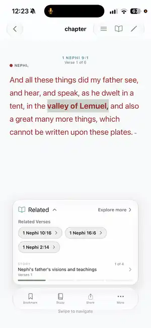
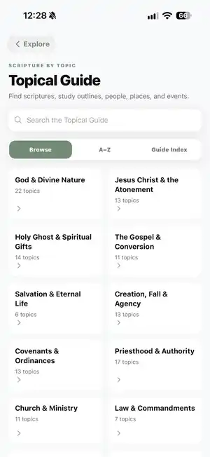
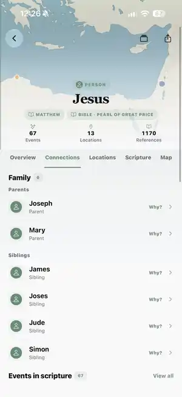
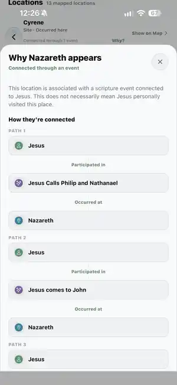

Focused reading with context close by.
Cultivate scripture study
Read one verse.
Read one verse.
Study together.
Explore deeper.
Cultivate combines a focused scripture reader, private cross-device Study Spaces, and connected study tools that help you follow the people, places, events, relationships, and topics behind the text.
Private groups that work across devices.
Follow the connections behind scripture.
Start with these three
The heart of Cultivate.
You can do a lot inside the app, but these are the three experiences we want someone to understand immediately.
01
One-verse reader
Give one verse your full attention, then open related verses, story context, notes, highlights, and study tools when you want them.
02Study Spaces
Read together, follow shared progress, and share selected thoughts without exposing the rest of your private study.
03Cultivate Labs
Explore people, places, events, relationships, scripture references, and topics through Explorer and the Topical Guide.
Focused reading experience
Read with context built in.
Move through scripture one verse at a time without giving up the context around it. Related verses, story moments, notes, highlights, and deeper study tools stay close to the text.
- Swipe through one verse at a time
- Switch to full-chapter reading whenever you want
- Open related verses and story context without losing your place
- Bookmark, highlight, take notes, save, and share

Shared study & groups
Study together with family.
Create a private Study Space, invite the people you care about, and keep everyone moving through the same reading without turning scripture study into another group chat.
One group, whatever device everyone uses.
Study Spaces work across iPhone, Android phones, and tablets. Everyone can read, share, and follow the same group from the device they already have.
‹Book of Mormon by EoY•••
NWEM
Book of Mormon by EoY
2 members · Family
SHARED READING
Family
Next: 1 Nephi 13
TOGETHER
2 people have started this reading.
Last activity today
SHARED THOUGHTS
No thoughts shared yet.
Thoughts shared from scripture will appear here.
Cultivate Labs
Explore the story behind the verse.
Explorer and the Topical Guide are built for following connections: who was there, where it happened, how people relate, which passages support the connection, and where a topic appears across scripture.
Scripture Explorer
Explore people, places & events.
Open a person and move through locations, events, relationships, and source passages connected to that record.

Relationships & context
See how scripture connects.
Use the Why view to inspect the path behind a connection instead of taking a relationship label at face value.

Topical Guide
Study by topic.
Browse scripture references across the standard works, search directly, or start with a category and follow a theme across passages.
Explore the Topical Guide →
More ways to study
The rest of your study life stays organized too.
These tools sit underneath the three core experiences and give you more ways to keep going once you are inside the app.
Plans, lessons & routines
Keep your study organized.
Pick up where you left off, manage plans, and keep lessons and progress in one place.

Word bank & review
Learn line by line.
Fill in the blanks, get hints, and build confidence as you memorize scripture a little at a time.
×
WORD BANK
TODAY'S PRACTICE · 1 OF 81Moses 1:39
Moses 1:39
For ______ this is my ______ and my ______ — to bring to pass the ______ and ______ of ______.
eternalbeholdmy
Currently in testing
Open beta invitation
Try Cultivate on iOS or Android.
See the install steps, what to expect during testing, and how to join on your device.